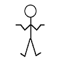

# of Research Papers:
Search:
How to use filters:
 Want: Show me!
Want: Show me!
Want: Show me!
Indifferent: I don't care.
Hide: I'm not interested!
Contact:
For adding your research paper or article, suggesting corrections and comments
Please contact us:
amit [dot] jena [at] monash [dot] edu
Please contact us:
amit [dot] jena [at] monash [dot] edu
I am a Ph.D. student at:
IITB-Monash Research Academy, Mumbai, India.
IDC School of Design, IIT Bombay, Mumbai, India.
Immersive Analytics Lab, Monash University, Melbourne, Australia.
IDC School of Design, IIT Bombay, Mumbai, India.
Immersive Analytics Lab, Monash University, Melbourne, Australia.
Sponsored by:
Data61, CSIRO, Australia.

Aerts, Jeroen CJH; Clarke, Keith C & Keuper, Alex D.: "Testing popular visualization techniques for representing model uncertainty." Cartography and geographic information science 30.3 (2003): 249-261.
Many land allocation issues, such as land-use planning, require input from extensive spatial databases and involve complex decision-making. Spatial decision support systems (SDSS) are designed to make these issues more transparent and to support the design and evaluation of land allocation alternatives. In this paper we analyze techniques for visualizing uncertainty of an urban growth model called SLEUTH, which is designed to aid decision-makers in the field of urban planning and fits into the computational framework of an SDSS. Two simple visualization techniques for portraying uncertainty-static comparison and toggling-are applied to SLEUTH results and rendered with different background information and color schemes. In order to evaluate the effectiveness of the two visualization techniques, a web-based survey was developed showing the visualizations along with questions about the usefulness of the two techniques. The web survey proved to be quickly accessible and easy to understand by the participants. Participants in the survey were mainly recruited among planners and decision-makers. They acknowledged the usefulness of portraying uncertainty for decision-making purposes. They slightly favored the static comparison technique over toggling. Both visualization techniques were applied to an urban growth case study for the greater Santa Barbara area in California, USA.
Agumya, Aggrey & Hunter, Gary J.: "Responding to the consequences of uncertainty in geographical data." International Journal of Geographical Information Science 16.5 (2002): 405-417.
The presence of uncertainty in geographical data has the potential to expose users to undesirable consequences in their decision making. Accordingly, our efforts to understand uncertainty seek to (a) avoid the use of data that are not suitable for their intended purpose (that is, data whose consequences are unacceptable), (b) to reduce any undesirable consequences to an acceptable level, and (c) to devise ways of living with undesirable data when the adverse consequences caused by poor data do not alter our ultimate decision choice. To assist this task, we propose an approach where the adverse consequences of uncertainty caused by the use of unsuitable geographical data are expressed in terms of risk. In this paper we first show that risk management offers geographical data users a range of options for responding to the adverse consequences of data uncertainty, and secondly we present and discuss the various risk response options.